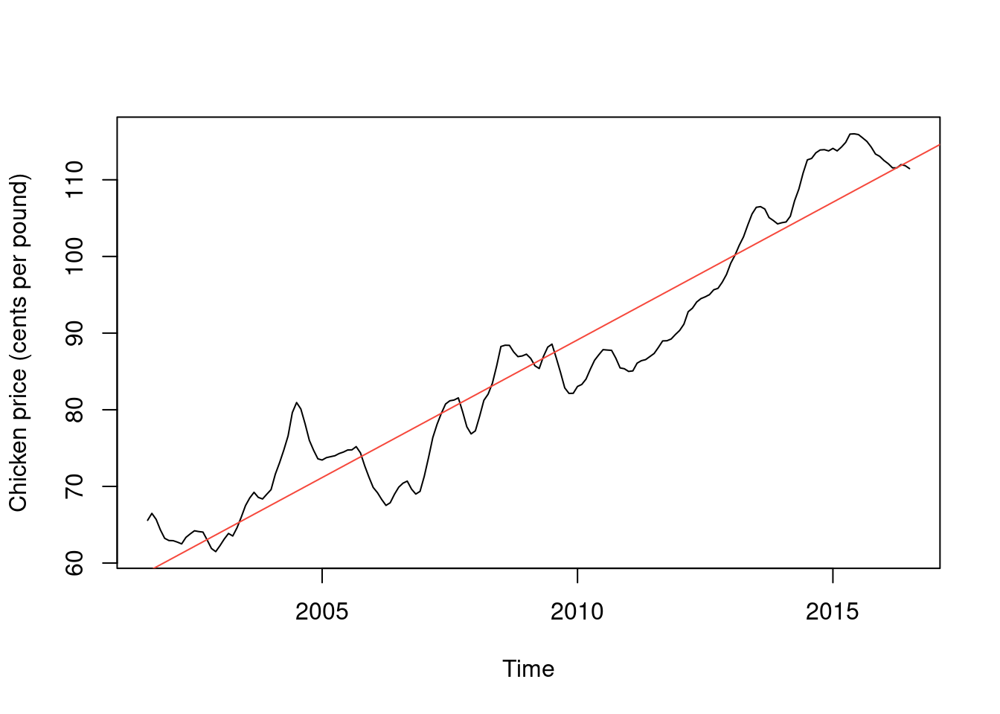
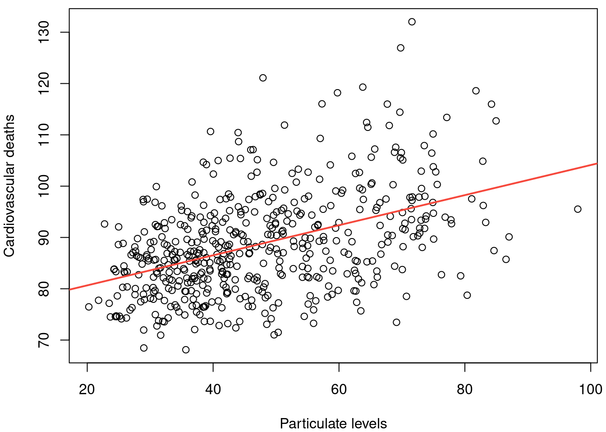
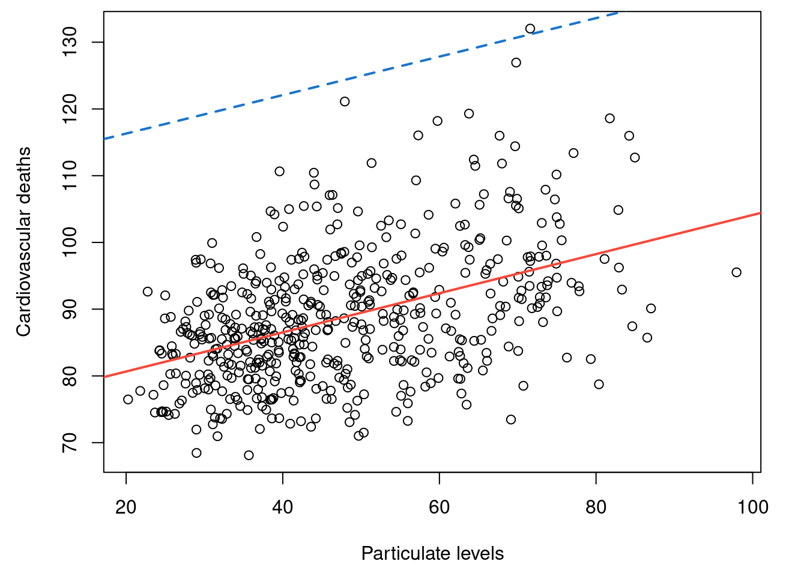
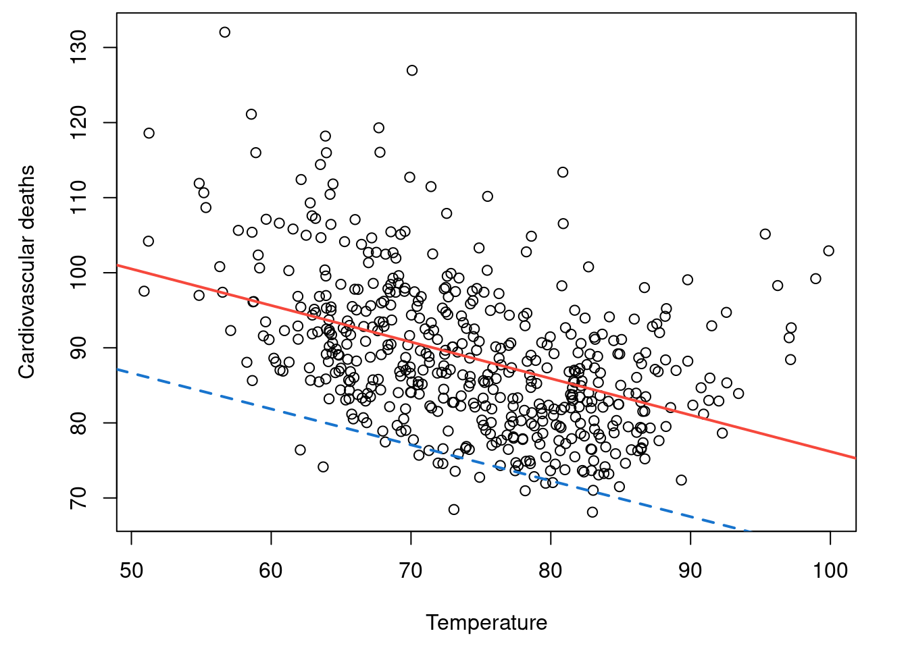
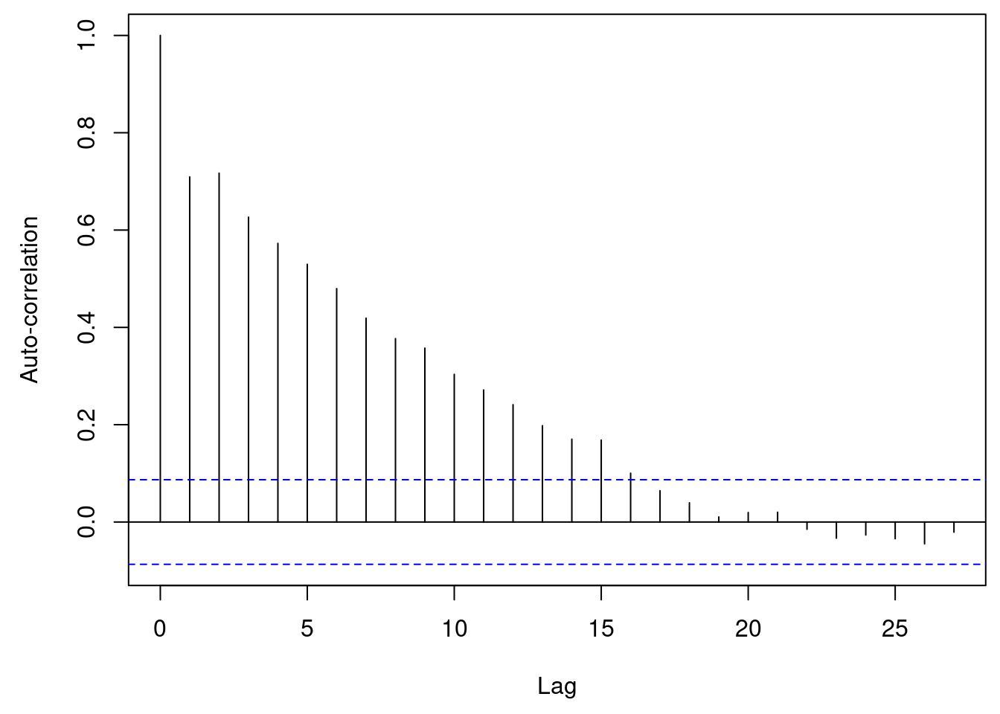
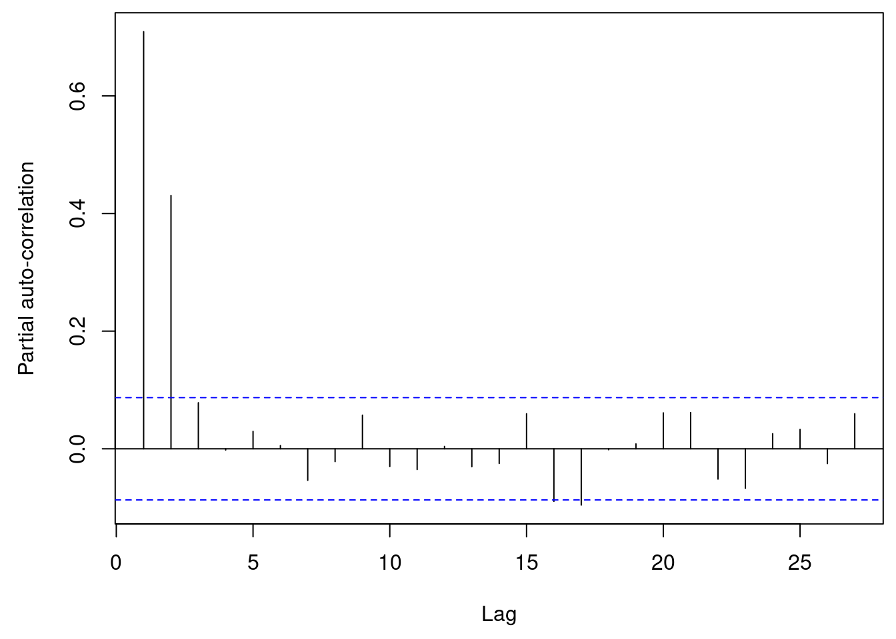
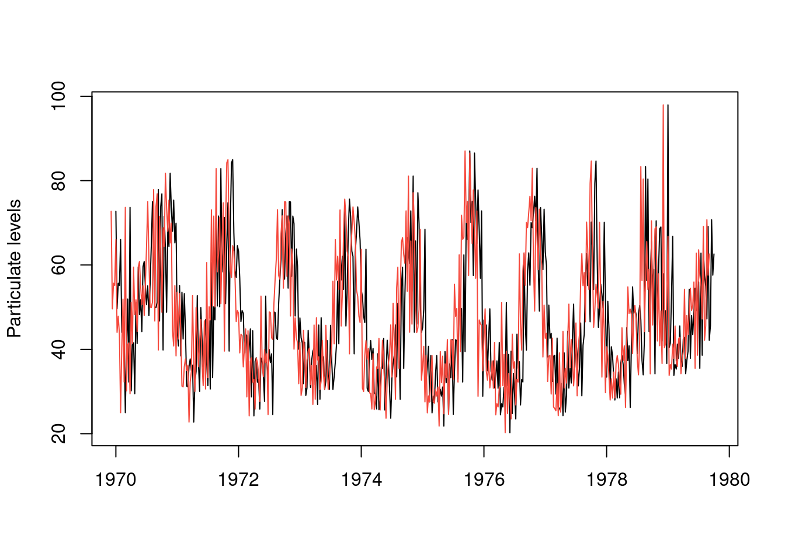
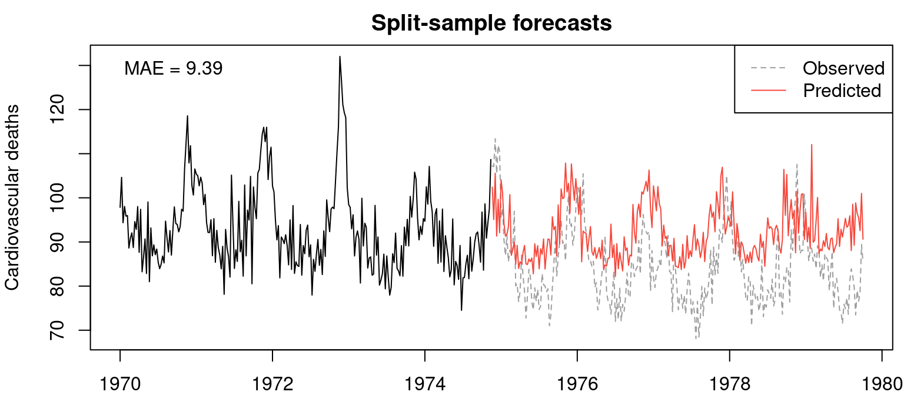
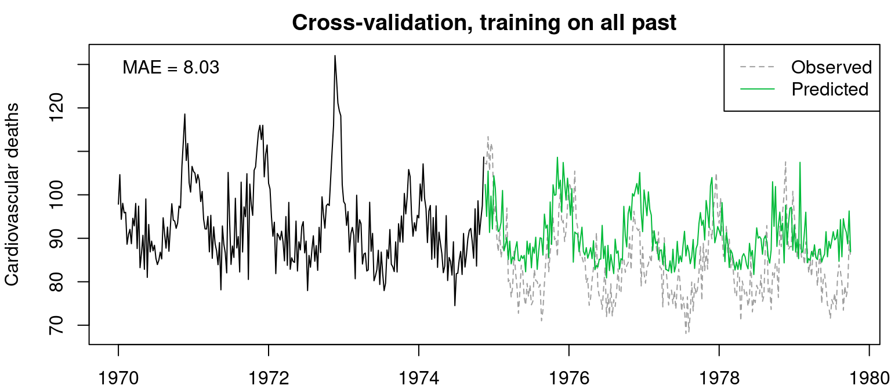
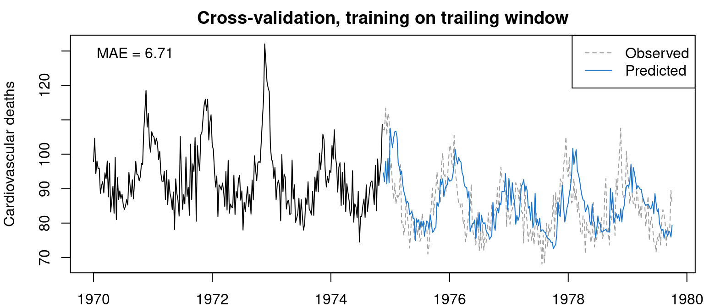

library(tidyverse)
library(astsa)
library(fpp3)
library(epidatasets)Lecture 3: Linear Regression and Prediction
Load packages
Chicken regression
head(chicken)[1] 65.58 66.48 65.70 64.33 63.23 62.94head(time(chicken))[1] 2001.583 2001.667 2001.750 2001.833 2001.917 2002.000reg = lm(chicken ~ time(chicken))
coef(reg) (Intercept) time(chicken)
-7131.022465 3.592109 plot(chicken, ylab = "Chicken price (cents per pound)")
abline(coef(reg), col = 2)
Cardiovascular mortality regression
# Simple regression
par(mfrow = c(2, 1), mar = c(2, 4, 0.75, 0.5))
plot(cmort, xlab = "", ylab = "Cardiovascular deaths")
plot(part, xlab = "", ylab = "Particulate levels")reg_part = lm(cmort ~ part)
coef(reg_part)(Intercept) part
74.7985953 0.2931732 par(mfrow = c(1, 1), mar = c(4, 4, 0.5, 0.5))
plot(part, cmort, xlab = "Particulate levels", ylab = "Cardiovascular deaths")
abline(coef(reg_part), col = 2, lwd = 2)
Cardiovascular mortality, multiple
# Multiple regression
par(mfrow = c(3, 1), mar = c(2, 4, 0.75, 0.5))
plot(cmort, xlab = "", ylab = "Cardiovascular deaths")
plot(part, xlab = "", ylab = "Particulate levels")
plot(tempr, xlab = "", ylab = "Temperature")reg_tempr = lm(cmort ~ tempr)
coef(reg_tempr)(Intercept) tempr
124.8324611 -0.4865793 reg_joint = lm(cmort ~ part + tempr)
coef(reg_joint)(Intercept) part tempr
110.5453149 0.2882667 -0.4782371 par(mfrow = c(1, 1), mar = c(4.5, 4.5, 0.5, 2))
plot(part, cmort, xlab = "Particulate levels", ylab = "Cardiovascular deaths")
abline(coef(reg_part), col = 2, lwd = 2)
abline(coef(reg_joint)[c(1,2)], col = 4, lty = 2, lwd = 2)
plot(tempr, cmort, xlab = "Temperature", ylab = "Cardiovascular deaths")
abline(coef(reg_tempr), col = 2, lwd = 2)
abline(coef(reg_joint)[c(1,3)], col = 4 , lty = 2, lwd = 2)
par(mar = c(4.5, 4.5, 0.5, 0.5))
acf(residuals(reg_part), ylab = "Auto-correlation")
pacf(residuals(reg_part), ylab = "Partial auto-correlation")
Lagged features, wrong way
# Regression with lagged features
k = 4 # Let's consider a 4 week lag
plot(part, xlab = "", ylab = "Particulate levels")
lines(stats::lag(part, k), col = 2)
# BEWARE!!! The WRONG WAY to do it!!!
coef(lm(cmort ~ stats::lag(part, k))) (Intercept) stats::lag(part, k)
74.7985953 0.2931732 # Why is this wrong? Because it is the same as un-lagged regression
coef(lm(cmort ~ part))(Intercept) part
74.7985953 0.2931732 coef(lm(cmort ~ stats::lag(part, 1))) (Intercept) stats::lag(part, 1)
74.7985953 0.2931732 coef(lm(cmort ~ stats::lag(part, 2))) (Intercept) stats::lag(part, 2)
74.7985953 0.2931732 coef(lm(cmort ~ stats::lag(part, 3))) (Intercept) stats::lag(part, 3)
74.7985953 0.2931732 # Why does this happen? Because stats::lag(x, k) returns a vector of the same
# length as x, and just shifts the time axis back k time steps, but lm() doesn't
# know about the time axis, and it just regresses one vector onto another ...
head(part)[1] 72.72 49.60 55.68 55.16 66.02 44.01head(stats::lag(part, k))[1] 72.72 49.60 55.68 55.16 66.02 44.01range(time(part))[1] 1970.00 1979.75range(time(stats::lag(part, k)))[1] 1969.923 1979.673Lagged features, right way
# The solution is to convert these to vectors and use dplyr::lag()
cmort_vec = as.numeric(cmort)
part_vec = as.numeric(part)
# Now look at this! As expected, the first 4 are NA because we don't have lag 4
# values there
x = dplyr::lag(part_vec, k)
head(part_vec)[1] 72.72 49.60 55.68 55.16 66.02 44.01head(x)[1] NA NA NA NA 72.72 49.60# Since lm() omits NA values by default, we are fine to do the regression. The
# fitted model is different (different coefficients), as expected
reg_lagged = lm(cmort_vec ~ x)
coef(reg_lagged)(Intercept) x
72.3477118 0.3438611 # With this model we can make k (true, out-of-sample) forecasts, since we have
# not used the last k particular level measurements in fitting the regression
yhat = predict(reg_lagged, newdata = data.frame(x = tail(part_vec, k)))
# Note: predict() can be VERY ANNOYING as requires you to create a data frame
# whose variable is the same new as the covariate used in the call to lm() ...
# Important to be aware of this (which is why we saved the lagged feature as a
# simple variable called x), and it will save you lots of pain debugging later
# We can plot these predictions, but we can't validate them (we don't have data
# on what happened after 1970)
par(mar = c(2, 4, 2, 0.5))
delta = 1 / frequency(cmort)
plot(cmort, xlim = c(min(time(cmort)), max(time(cmort)) + k * delta),
xlab = "", ylab = "Cardiovascular deaths", main = "Prospective forecasts")
lines(max(time(cmort)) + (1:k) * delta, yhat, col = 2)Split-sample forecasts
# To validate them, we can refit the regression on the first half of the time
# series, make forecasts on the second half, and compare to what was observed
n = length(cmort)
first_half = 1:n <= floor(n/2)
second_half = 1:n > floor(n/2)
reg_lagged_first_half = lm(cmort_vec ~ x, subset = first_half)
coef(reg_lagged_first_half)(Intercept) x
74.4085159 0.3844513 yhat_second_half = predict(reg_lagged_first_half,
newdata = data.frame(x = x[second_half]))
mae_second_half = mean(abs(cmort[second_half] - yhat_second_half))
par(mar = c(2, 4, 2, 0.5))
plot(time(cmort)[first_half], cmort[first_half], type = "l",
xlim = range(time(cmort)), ylim = range(cmort),
xlab = "", ylab = "Cardiovascular deaths",
main = "Split-sample forecasts")
lines(time(cmort)[second_half], cmort[second_half], col = 8, lty = 2)
lines(time(cmort)[second_half], yhat_second_half, col = 2)
legend("topright", legend = c("Observed", "Predicted"),
lty = c(2, 1), col = c(8, 2))
legend("topleft", legend = paste("MAE =", round(mae_second_half, 2)),
bty = "n")
Cross-validation
# Now refit the regression sequentially on the second half, as we walk forward
# in time: this is called time series cross-validation. We'll actually do this
# with two models: one that fits on all past, and one that fits on the last 10
# time points
t0 = floor(n/2)
yhat_all_past = yhat_trailing = rep(NA, length = n-t0)
w = 10 # This is our trailing window length
for (t in (t0+1):n) {
reg_all_past = lm(cmort_vec ~ x, subset = (1:n) <= t-k)
reg_trailing = lm(cmort_vec ~ x, subset = (1:n) <= t-k & (1:n) > t-k-w)
yhat_all_past[t-t0] = predict(reg_all_past, newdata = data.frame(x = x[t]))
yhat_trailing[t-t0] = predict(reg_trailing, newdata = data.frame(x = x[t]))
}
mae_all_past = mean(abs(cmort[second_half] - yhat_all_past))
mae_trailing = mean(abs(cmort[second_half] - yhat_trailing))
par(mar = c(2, 4, 2, 0.5))
plot(time(cmort)[first_half], cmort[first_half], type = "l",
xlim = range(time(cmort)), ylim = range(cmort),
xlab = "", ylab = "Cardiovascular deaths",
main = "Cross-validation, training on all past")
lines(time(cmort)[second_half], cmort[second_half], col = 8, lty = 2)
lines(time(cmort)[second_half], yhat_all_past, col = 3)
legend("topright", legend = c("Observed", "Predicted"),
lty = c(2, 1), col = c(8, 3))
legend("topleft", legend = paste("MAE =", round(mae_all_past, 2)),
bty = "n")
plot(time(cmort)[first_half], cmort[first_half], type = "l",
xlim = range(time(cmort)), ylim = range(cmort),
xlab = "", ylab = "Cardiovascular deaths",
main = "Cross-validation, training on trailing window")
lines(time(cmort)[second_half], cmort[second_half], col = 8, lty = 2)
lines(time(cmort)[second_half], yhat_trailing, col = 4)
legend("topright", legend = c("Observed", "Predicted"),
lty = c(2, 1), col = c(8, 4))
legend("topleft", legend = paste("MAE =", round(mae_trailing, 2)),
bty = "n")